01/09/2023 — Một nam giới trung niên đau ngực cấp
Bản dịch tiếng Việt của bài "A middle-aged man with acute chest pain." – Dr. Smith’s ECG Blog. Giữ nguyên toàn bộ 12 hình ảnh của bản gốc.
Một nam giới ngoài 50 tuổi khởi phát đau ngực 1 giờ trước khi đến khoa cấp cứu (ED). Đau liên tục, mức 9/10, đau ngực bên trái lan ra cánh tay trái và hàm. Có kèm khó thở (SOB) mức độ nhẹ, nhưng không đau lưng, không sốt, không ho, không ớn lạnh, không phù chân hay triệu chứng mới nào khác. Trước đây chưa từng bị như vậy. Đang dùng metoprolol điều trị tăng huyết áp.
Đây là điện tâm đồ lúc phân loại (triage):

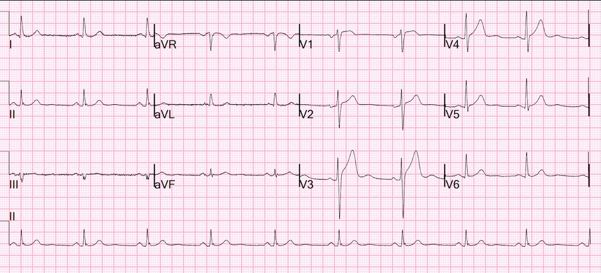
Bạn nghĩ gì?
Cả thuật toán thông thường lẫn bác sĩ giảng viên trực khu phân loại đều không nhận ra đây là OMI.
Smith: Tôi cho rằng các chuyển đạo V3 và V4 rất đáng lo ngại, và gần như đủ để chẩn đoán, tắc LAD cấp. Tôi sẽ kích hoạt phòng thông tim (cath lab), hoặc ít nhất là tìm một điện tâm đồ cũ và/hoặc ghi các điện tâm đồ liên tiếp.
Tôi sẽ dùng Queen of Hearts (vốn [người dịch: nguyên văn bị cụt câu sau chữ “which”] và công thức phân biệt tắc LAD với tái cực sớm (LAD vs. Early Repol formula).
Bạn có thể xem nhiều ví dụ sử dụng Queen of Hearts AI Bot của PMCardio TẠI ĐÂY; bạn có thể đăng ký để dùng nó TẠI ĐÂY.
Ca bệnh tiếp diễn
Có sẵn một điện tâm đồ cũ ghi 1,5 năm trước, nhưng tôi không biết bác sĩ khu phân loại (người RẤT bận) có tìm xem nó hay không. Đây là điện tâm đồ đó:

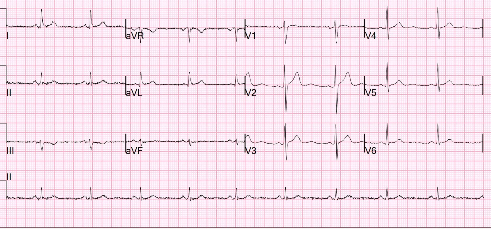
Các sóng T này nhỏ hơn nhiều, xác nhận rằng điện tâm đồ ở trên đúng là do OMI LAD.
Hãy đặt chúng cạnh nhau để so sánh:
Điện tâm đồ cũ Lúc nhập viện, khi đang đau ngực

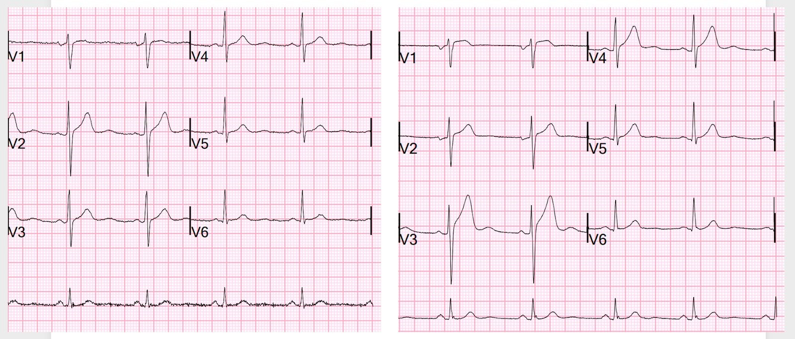
Giờ bạn có thể dễ dàng thấy các sóng T ở V2-V5 đều lớn hơn nhiều, vừa cao hơn vừa “đầy đặn” (bulky) hơn
Nếu bạn dùng ứng dụng AI Queen of Hearts, kết quả sẽ là âm tính giả.

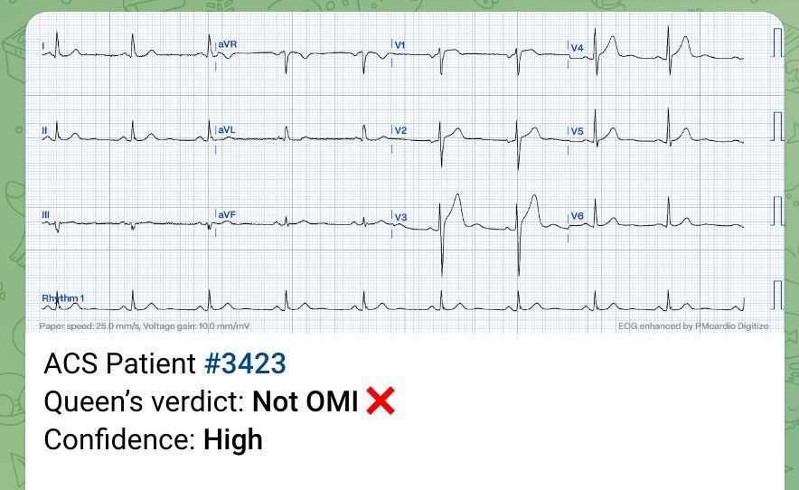
Đây là phiên bản đầu tiên của hệ thống AI. Nó đã được thử nghiệm trên một cơ sở dữ liệu lớn với kết cục đã biết, có độ nhạy cao hơn gấp đôi so với tiêu chuẩn STEMI và tốt hơn nhiều so với các bác sĩ tim mạch. Độ chính xác là 91% và diện tích dưới đường cong (AUC) là 0,95. Bạn có thể đọc bản tiền ấn phẩm (preprint) tại đây; bài đang được bình duyệt tại European Heart Journal.
Chúng tôi liên tục dạy và cải tiến hệ thống AI. Rồi đây chúng tôi sẽ dạy nó so sánh với điện tâm đồ trước đó.
Nếu bạn dùng công thức 4 biến, kết quả dương tính với OMI LAD:

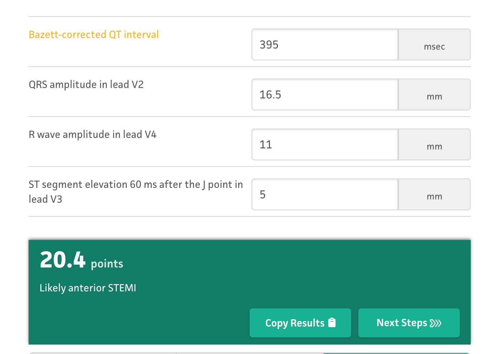
Khi dùng công thức 4 biến, điều quan trọng là KHÔNG hiệu chỉnh khoảng QR [người dịch: nguyên văn ghi “QR interval”, nhiều khả năng là lỗi đánh máy của “QT interval”] khi tần số tim dưới 60!!
Ca bệnh tiếp diễn
Điện tâm đồ được ghi xong lúc 0952, bác sĩ khu phân loại không nhận ra điện tâm đồ này là do OMI LAD. Bệnh nhân được đưa vào phòng chờ khu phân loại, rồi được xếp vào buồng khám lúc 1028.
Bệnh nhân và điện tâm đồ được một trợ lý bác sĩ (Physician Assistant) rất giỏi xem, và cô ấy lo lắng, nên đã tìm một bác sĩ khác trong khoa rất giỏi đọc điện tâm đồ, và anh ấy đồng ý rằng đây là OMI thành trước. Bệnh nhân được chuyển sang khu hồi sức (phòng ổn định bệnh nhân).
Phòng thông tim được kích hoạt.
Điện tâm đồ thứ 2 ghi 50 phút sau điện tâm đồ đầu tiên.

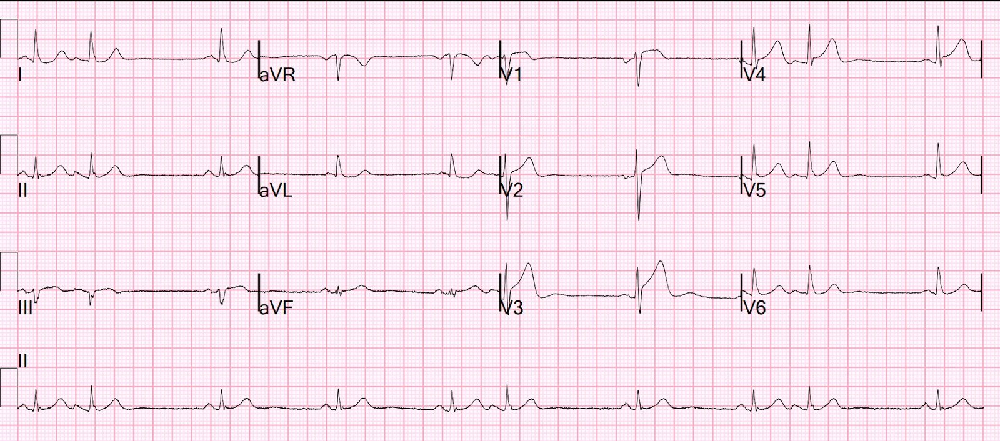
Thay đổi đáng kể. Giờ đã có giá trị chẩn đoán OMI LAD rõ hơn. Chú ý sóng S ở V3 giảm biên độ, và ST chênh lên (STE) tăng lên kèm sóng T đầy đặn hơn, cũng ở V3. Đây là một trong những đặc điểm của tắc LAD: mất dần độ sâu sóng S cho đến khi xuất hiện biến dạng phần cuối QRS (TQRSD) rõ rệt. TQRSD không có ở đây (ít nhất là chưa có) và không phải lúc nào cũng có trong OMI LAD, nhưng TQRSD không bao giờ có trong ST chênh lên bình thường)
Tôi đã gửi điện tâm đồ này cho Queen of Hearts (PMcardio OMI), và đây là kết luận:

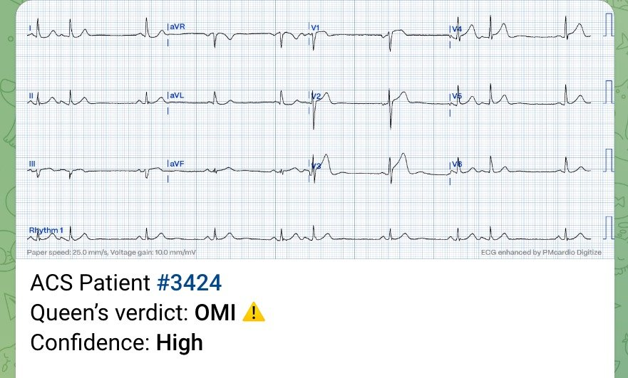
Trong lúc chờ kíp thông tim sẵn sàng, một điện tâm đồ khác được ghi 20 phút sau bản thứ 2

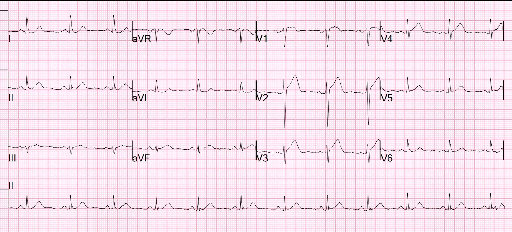
Kết quả troponin I độ nhạy cao (hs troponin I) đầu tiên có rất muộn sau đó, là 125 ng/L.
Chụp mạch vành
(Các) tổn thương thủ phạm:
Nhồi máu cơ tim ST chênh lên do hẹp 99% LAD đoạn xa
Siêu âm tim chính thức:
Phân suất tống máu thất trái ước tính bình thường, 63%.
Rối loạn vận động thành khu trú: giảm động vùng trước vách giữa-mỏm và thành dưới vùng mỏm, kèm loạn động vùng mỏm.
Không đo troponin đỉnh.
Điện tâm đồ sau PCI

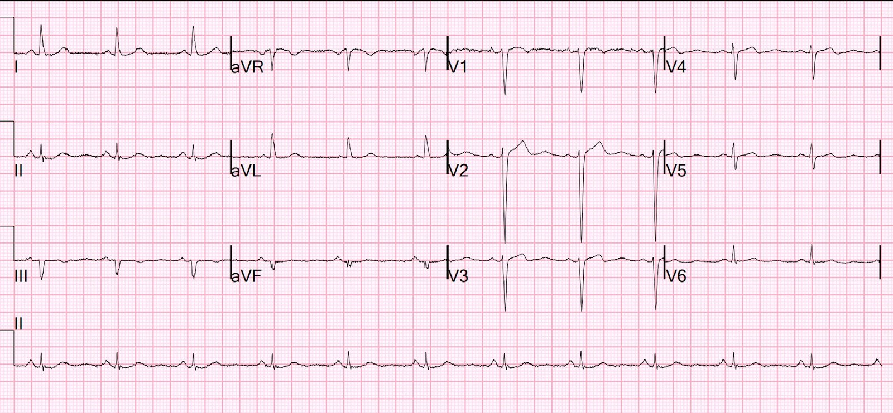
Phù hợp với tái tưới máu
Điện tâm đồ ngày hôm sau:

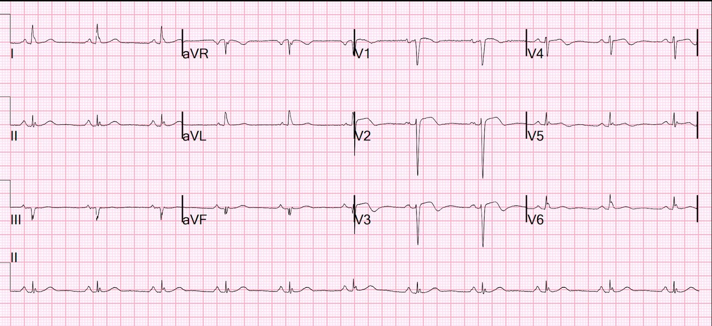
Diễn tiến điển hình của điện tâm đồ sau tái tưới máu, với sóng T đang đảo ngược (“sóng T tái tưới máu”). Các sóng này giống hệt sóng Wellens vì hội chứng Wellens chính là một OMI thoáng qua (hay STEMI thoáng qua)
Những điểm cần học
1. Sóng T tối cấp có thể rất kín đáo
2. Rất dễ bỏ sót tắc LAD cấp
3. Queen of Hearts (phiên bản đầu tiên) thật tuyệt vời, nhưng chưa hoàn hảo.
4. Chúng tôi sẽ làm các phiên bản tiếp theo tốt hơn nhiều — nó có thể liên tục học và liên tục được dạy
5. Luôn so sánh với điện tâm đồ cũ nếu có (trong tương lai chúng tôi sẽ dạy Queen làm việc này)
6. Luôn ghi các điện tâm đồ liên tiếp ở bệnh nhân đau ngực cấp.
BẠN CŨNG CÓ THỂ CÓ PM Cardio AI BOT!! (ỨNG DỤNG PM CARDIO OMI AI)
Nếu bạn muốn bot này giúp bạn chẩn đoán sớm OMI và cứu bệnh nhân cùng cơ tim của họ, bạn có thể đăng ký để nhận phiên bản beta sớm của bot tại đây.
https://share-eu1.hsforms.com/18cAH0ZK0RoiVG3RjC5dYdwfyfsg (biểu mẫu đăng ký dùng thử ứng dụng PMcardio)

===================================
BÌNH LUẬN CỦA TÔI, bởi KEN GRAUER, MD (1/9/2023):
===================================
Như Dr. Smith đã nêu — điện tâm đồ ban đầu hôm nay cho thấy những dấu hiệu rất kín đáo, có thể dễ bị bỏ qua. Điều này đặt ra câu hỏi: LÀM SAO Dr. Smith biết ngay (cũng như tôi cũng biết ngay) — rằng ở người đàn ông trung niên có bệnh sử đau ngực mới khởi phát đáng lo ngại này — điện tâm đồ #1 rất đáng nghi OMI cấp?
- Để rõ ràng và dễ so sánh — tôi đã đặt 2 bản ghi đầu tiên trong ca hôm nay cạnh nhau ở Hình 1.

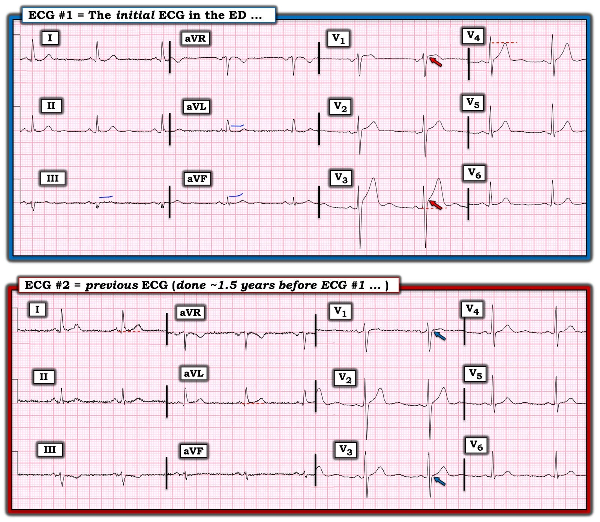
SUY NGHĨ CỦA TÔI về các điện tâm đồ ở Hình 1:
Như phần bàn luận sâu sắc của Dr. Smith ở trên — 2 chuyển đạo trong điện tâm đồ #1 lập tức thu hút sự chú ý của Dr. Smith là chuyển đạo V3 và V4 — mà ở bệnh nhân đau ngực dữ dội mới xuất hiện này, rõ ràng chỉ điểm OMI LAD cấp cho đến khi chứng minh được điều ngược lại.
Tôi sẽ nói rộng thêm về những đặc điểm trên điện tâm đồ ban đầu hôm nay đã thu hút sự chú ý của tôi.
- Một chuyển đạo ngay lập tức cảnh báo tôi về khả năng có biến cố cấp — là chuyển đạo V1. Bình thường — đoạn ST ở chuyển đạo V1 phẳng, thường kèm sóng T đảo ngược nhẹ. Đôi khi có thể có ST dạng vòm (coving) nhẹ, và thậm chí ST chênh lên chút ít ở V1 — nhưng theo kinh nghiệm của tôi, hầu như không bao giờ nên có mức ST chênh lên tại điểm J ở chuyển đạo V1 nhiều như chúng ta thấy ở điện tâm đồ #1 trên một bản ghi QRS hẹp, không có LVH (mũi tên ĐỎ ở chuyển đạo V1 trong Hình 1). Sự kết hợp giữa mức ST chênh lên tại điểm J nhiều như vậy và ST dạng vòm với hình dạng như ta thấy ở điện tâm đồ #1 (tức là không giống “tăng gánh” thất trái) — ở một bệnh nhân đau ngực mới xuất hiện, đáng lo ngại, khiến tôi lập tức xem kỹ hơn 11 chuyển đạo còn lại.
- Chuyển đạo đáng lo ngại thứ 2 đối với tôi trên điện tâm đồ #1 — là chuyển đạo V3. Mặc dù “hình dạng” của sóng ST-T ở chuyển đạo V3 cho thấy đoạn ST dốc lên thoai thoải, vốn thường gặp như một dấu hiệu bình thường — mức độ ST chênh lên tại điểm J ở chuyển đạo này rõ ràng là quá mức (tức là ít nhất 3 mm, theo mũi tên ĐỎ ở chuyển đạo này). Trong bối cảnh đó — dù tăng tiến sóng R bình thường và QTc không kéo dài — tôi thấy đáy của sóng ST-T ở chuyển đạo V3 trông rộng hơn mong đợi — và dù sóng S sâu = 16 mm ở V3, sóng T cao 12+ mm ở chuyển đạo này vẫn lớn hơn mong đợi một cách không tương xứng.
- Đáng ngạc nhiên — sóng ST-T ở chuyển đạo kế cận V2 trông bình thường …
- Dù vậy — Trong bối cảnh một bệnh nhân đau ngực mới xuất hiện, đáng lo ngại — các bất thường ST-T rõ ràng ở chuyển đạo V1 và V3 cho tôi biết rằng kích thước tương đối của sóng T ở chuyển đạo V4 kế cận còn lại rõ ràng là to lên một cách không tương xứng (tức là tối cấp) so với biên độ sóng R ở chuyển đạo đó.
Điểm MẤU CHỐT: Càng nhiều chuyển đạo có sóng ST-T bất thường — càng củng cố mạnh hơn khả năng OMI cấp đang diễn ra (và chỉ định thông tim sớm càng rõ). Vì lý do này — tôi đã xem xét kỹ các chuyển đạo chi trên điện tâm đồ #1.
- XIN NHẤN MẠNH: Nếu nhìn điện tâm đồ #1 như một bản ghi đơn lẻ, tách biệt — rõ ràng không có thay đổi ST-T cấp ở các chuyển đạo chi của bản ghi này. Dù vậy — sóng ST-T ở các chuyển đạo III, aVL và aVF của bản ghi ban đầu này không hoàn toàn “bình thường”. Như các đường XANH tôi vẽ trên điện tâm đồ #1 — các chuyển đạo chi này cho thấy đoạn ST và sóng T dẹt không đặc hiệu. Với việc tôi nhận định sóng ST-T ở các chuyển đạo V1, V3, V4 là tối cấp đến mức đó — tôi tự hỏi LIỆU lý do không thấy thay đổi cấp ở chuyển đạo chi trên điện tâm đồ #1 có thể là: i) Điện tâm đồ nền của bệnh nhân có thể không hoàn toàn bình thường; và/hoặc, ii) Người đàn ông trung niên này có thể bị bệnh nhiều nhánh mạch vành.
- Dù đã nói như trên — Bất kể các chuyển đạo chi trên điện tâm đồ #1 có cho thấy điều gì cấp tính hay không — thông tim sớm vì nghi OMI LAD cấp đã có chỉ định dựa trên bệnh sử và các thay đổi sóng ST-T tối cấp nêu trên ở các chuyển đạo V1, V3, V4.
- LƯU Ý: Thay đổi ST-T soi gương (reciprocal) thường gặp hơn khi tắc LAD đoạn gần — nhưng không phải mọi OMI LAD đều biểu hiện thay đổi soi gương ở chuyển đạo chi.
Điện tâm đồ trước đó:
Như Dr. Smith đã nêu — So sánh điện tâm đồ ban đầu hôm nay với một bản ghi trước đó ghi cách đây ~1,5 năm — cho thấy rõ sóng T ở các chuyển đạo V2-đến-V5 lớn hơn, cao hơn và “đầy đặn” hơn ở điện tâm đồ #1 so với ở điện tâm đồ #2.
Tôi xin bổ sung như sau:
- Mũi tên XANH ở chuyển đạo V1 của điện tâm đồ #2 cho thấy — mặc dù ST dạng vòm ở chuyển đạo V1 này đã có trong bản ghi trước — mức ST chênh lên quá mức tại điểm J mà tôi chỉ ra bằng mũi tên ĐỎ trên điện tâm đồ #1 trước đây không có.
- Trên điện tâm đồ #1 cũng có những thay đổi ở chuyển đạo chi không có trong bản ghi trước. Mặc dù hình dạng QRS ở các chuyển đạo chi rất giống nhau (tức là Trục mặt phẳng trán không thay đổi đáng kể — nên việc so sánh thay đổi ST-T theo từng chuyển đạo sẽ có giá trị!) — sóng T ở chuyển đạo III trước đây đảo ngược, trong khi giờ đây lại dương nhẹ ở chuyển đạo III của điện tâm đồ #1.
- Sóng T ở chuyển đạo aVF giờ cũng dương trên điện tâm đồ #1.
- ST chênh lên nhẹ từng có ở các chuyển đạo bên cao (I, aVL) của bản ghi trước — không còn trên điện tâm đồ #1.
- XIN NHẤN MẠNH: Không thay đổi nào trong số những thay đổi ở chuyển đạo chi mà tôi chỉ ra ở trên giữa 2 điện tâm đồ đầu tiên trong ca hôm nay làm thay đổi xử trí (tức là Bệnh nhân này rõ ràng cần thông tim sớm kèm PCI chỉ dựa trên bệnh sử và các dấu hiệu tối cấp ở chuyển đạo trước tim). Nhưng tôi luôn thấy việc đối chiếu càng nhiều càng tốt các dấu hiệu trên các điện tâm đồ liên tiếp với bệnh sử lâm sàng là rất sâu sắc (và với tôi, rất bổ ích). Không chỉ thông tim cấp cho thấy hẹp 99% LAD ( = tổn thương “thủ phạm”) đoạn xa — mà còn phát hiện bệnh ở hệ động mạch mũ trái (LCx) — điều mà theo tôi giải thích các bất thường kín đáo ở chuyển đạo chi trên bản ghi trước — và theo tôi cũng xác nhận rằng đã có một số thay đổi cấp, kín đáo ở chuyển đạo chi trên điện tâm đồ ban đầu hôm nay.